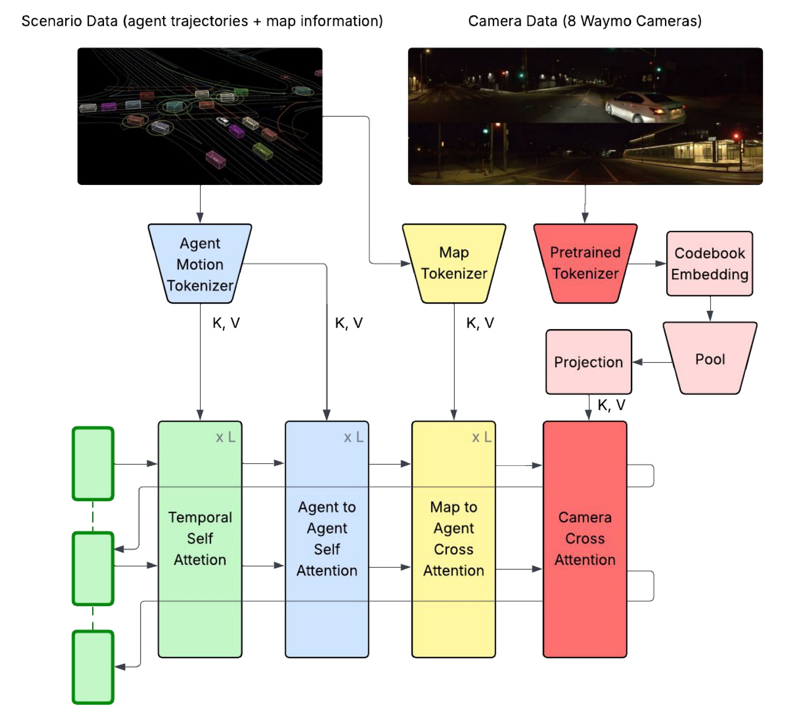
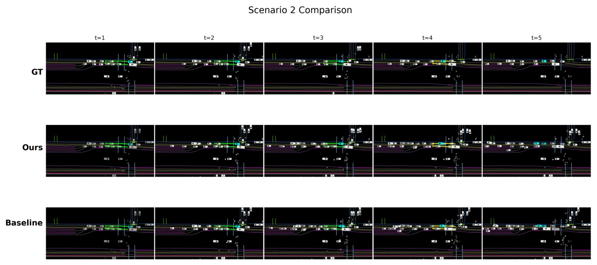
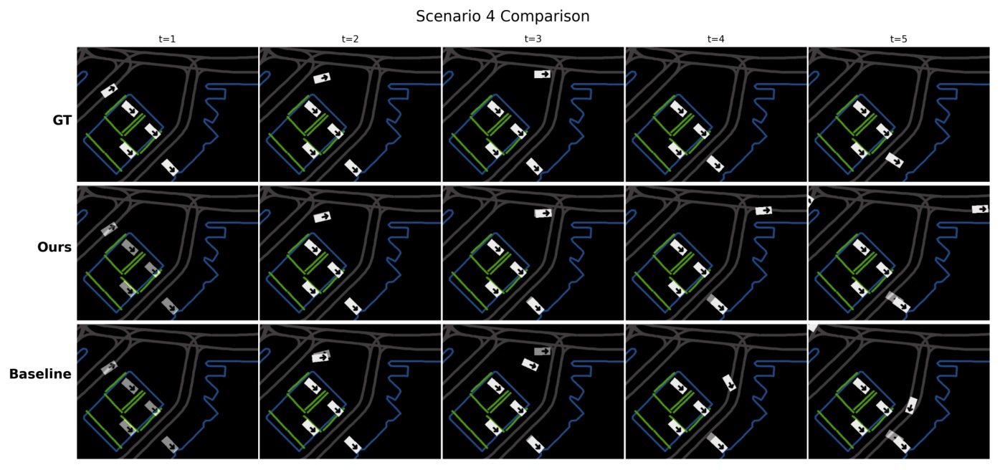

High-fidelity traffic simulation with camera embeddings
Our team added camera cross-attention to SMART for multi-agent traffic simulation. The evaluation improved realism and map/interaction scores while exposing a trade-off in trajectory error. I contributed camera-embedding and cross-attention integration, data processing, and the report.
My role
Camera embedding / cross-attention integration · data processing · report writing
Status
Completed Stanford CS231N course research · collaborative report
Computer visionCross-attentionSMARTWaymo Open Motion Dataset
Original traffic-simulation demonstration from the project archive.
The question: what do trajectories leave out?
Traffic-agent simulators learn from past movement and map geometry, but those inputs can omit visual context that affects how people drive. Our CS231N team investigated whether camera embeddings could make SMART’s next-token rollouts more responsive to that context.
The project is a collaborative course study by Ryan Rong, Jerry Gu, and me. SMART is the pretrained reference model; the team’s extension adds a visual input route to its decoder.
Cross-attention as the connection to action
The report describes eight Waymo camera streams. Each camera’s discrete tokens are looked up in a 32-dimensional codebook, mean-pooled, and projected to the 128-dimensional model representation. A camera cross-attention module lets the agent sequence query those visual features.
The agent representation supplies the queries; camera features supply the keys and values. The resulting residual update lets visual evidence influence the next predicted motion token alongside temporal, map, and inter-agent context.

Original team poster: the camera pathway joins the motion and map representations through a separate cross-attention block. Original source ↗
01 · EncodeEight camera views
Discrete tokens → codebook → mean pool → projection.
02 · AttendAgent queries camera context
Multi-head cross-attention connects visual features to the motion representation.
03 · Roll outPredict motion tokens
Generate multi-agent trajectories and evaluate their realism.
Evaluation: a measurable gain and a real trade-off
The camera extension used 10% of the scenario data for fine-tuning and a 10% test subset, according to the course report. Table 4 compares it with the SMART baseline and linear extrapolation. These are reported course experiments, rather than an official challenge ranking.
RMM increases from 0.7649 to 0.7769: +0.0120 absolute, or +1.57% relative. Interaction and map scores improve, while the kinematic score drops slightly and minADE rises from 1.3716 to 2.2600. Better realism under this evaluation does not imply better performance on every trajectory metric.
The report suggests visual context may help reproduce nuanced curbside and off-road behavior.
The mechanism behind individual improvements was not isolated by a camera-cue ablation.
A lower trajectory error and improved interaction realism remain separate objectives to balance.
Course report · Table 4. Higher is better for realism scores; lower is better for minADE.
Method
RMM ↑
Kinematic ↑
Interactive ↑
Map ↑
minADE ↓
Camera SMART
0.7769
0.4799
0.8237
0.8862
2.2600
SMART baseline
0.7649
0.4862
0.8039
0.8741
1.3716
Linear extrapolation
0.3985
0.2253
0.4327
0.3848
7.5148
Inspect the successful and difficult cases
In Scenario 02, the report highlights a pull-over reproduced by Camera SMART and a baseline overlap. It also identifies a tailgating collision in the camera-aware rollout: visual information did not eliminate the need for better dynamics and braking behavior.
In Scenario 04, the camera-aware model better reproduces a small off-road deviation and subsequent return, while the baseline travels farther off-road. The original rollout panels below allow the comparison to be inspected directly.

Course report, Figure 3: Scenario 02. A helpful visual-context example and a remaining collision occur within the same scene.

Course report, Figure 4: Scenario 04. Compare the off-road deviation and return across the three rows.
My contribution within the team
I contributed camera-embedding and cross-attention integration, data processing, and report writing. The final report also records my analysis of existing autonomous-driving methods, dataset structure, and theoretical framing, along with the introduction and dataset sections I wrote.
Ryan Rong conceived the project, led the architecture, data pipeline and training, and wrote methods/results. Jerry Gu contributed literature review, baseline setup, and experimental documentation. The architecture and numerical results above describe the team’s system.
The useful question is not simply whether more modalities are available. It is how their information reaches the decision being made, and whether the evaluation reveals both the gain and its limits. This connection between representation, evidence, and downstream action became central to my later manipulation research.
Outcomes
An evaluated camera-aware SMART extension, with report, poster, and simulation demonstration.
A 1.57% relative RMM increase accompanied by a worse minADE, made explicit in the comparison.
My contribution to multimodal integration, data processing, theoretical analysis, and report writing.
A robot can recognize a scene and still lack the evidence needed for its next action. I built a benchmark and diagnostic reference pipeline that connect view selection to the current manipulation command.
A symmetry-aware VLA framework that combines action generation, predicted consequences, and adaptive interaction. My interest is in policies that can respond when physical observations disagree with an expected trajectory.